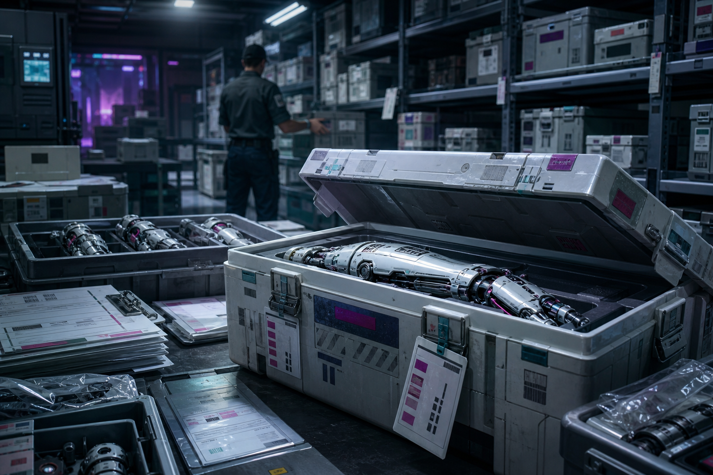

Ambientado en Oasis (tesela recién despertada) — módulo independiente, colgado del DLC Oasis. Puede ganar riqueza opcional si se jugó "Las Desapariciones", nunca la necesita. Estado: BORRADOR, pendiente de playtest.
«Una redada no separa lo legal de lo ilegal. Separa lo que alguien quiere que se vea de lo que alguien quiere que se pierda en el papeleo.»

Premisa: la policía y los Federales organizan una redada mayor contra el mercado negro de implantes de Oasis — la más grande en años, con varios puestos y almacenes caídos la misma noche. No es un escenario que se investiga con calma: son varios problemas ocurriendo a la vez, y el grupo no puede estar en todos los sitios. Lo que no atiendan no se congela — otra persona lo resuelve como puede, imperfectamente, y esa imperfección tiene consecuencias concretas.
Duración: una sesión de 4-6 horas, en una sola noche de redada con procesado de pruebas al día siguiente. Periodo: antes del despertar. Perspectiva: nativos.
Qué saben los PJ: que hay una redada grande en marcha esta noche — como personal de apoyo, informantes pagados, civiles atrapados en el operativo, o investigadores independientes que aprovechan el caos, según cómo la mesa quiera entrar.
Verdad del Narrador: dos tramas quedan enredadas en la misma redada sin que nadie lo planeara así. Primera: parte de lo incautado pertenece a una red de compradores de implantes de origen turbio —si se jugó Las Desapariciones y esa red sobrevivió, es literalmente esa misma operación, cayendo por fin; si no se jugó, es una red genérica equivalente, sin necesitar ese contexto. Segunda, y la que nadie esperaba: un oficial de evidencias, Renner, lleva años desviando piezas valiosas de las incautaciones para revenderlas él mismo, y va a aprovechar el volumen y el caos de esta redada concreta para cubrir sus propias huellas — o, si hace falta, cargarle la culpa a alguien más.
Objetivo inmediato: decidir, una y otra vez, qué frente atender primero — sin poder atenderlos todos — para que la evidencia importante no se pierda en el papeleo ni en manos de quien no debería tenerla.
Pregunta de fondo: en una ciudad donde el mercado negro de implantes existe porque la desigualdad real lo alimenta, ¿qué significa realmente "limpiar" una redada — y para quién?
Si nadie interviene: parte de la evidencia importante se pierde o se vende de nuevo por otro canal, Renner sigue operando sin que nadie lo note, y la redada se recuerda oficialmente como un éxito rotundo que en realidad resolvió menos de lo que parece.
Sin cuenta atrás de horas — la redada avanza por problemas simultáneos, no por reloj. No hace falta cronometrar nada. La herramienta es más simple: presenta al grupo dos o tres asuntos a la vez y pregunta "¿qué hacéis?". Lo que no atiendan no se congela — otro PNJ lo resuelve de forma imperfecta, Renner aprovecha la ausencia, o la situación cambia por sí sola. No hay contador que llevar ni ficha que rellenar: la simultaneidad se sostiene con acontecimientos concretos, no con un marcador abstracto.
Cuatro avisos recurrentes (no tienen que aparecer siempre ni en este orden — el Narrador los introduce cuando convenga a la escena):
Qué pasa según lo que el grupo haga:
- Si se divide: cada parte trabaja con menos apoyo — nadie cubre las espaldas de nadie, y eso tiene coste narrativo concreto en la propia escena, no una penalización abstracta.
- Si delega en un PNJ: el PNJ resuelve lo urgente, pero pierde un detalle, deja escapar a alguien, o interpreta mal una pista — nunca lo resuelve tan bien como lo habría hecho el grupo.
- Si ignora algo: eso se traduce en una consecuencia concreta y visible en la escena siguiente — nunca en restar puntos de un marcador que no existe.
Cómo avanza el tiempo de ficción: la Escena 1 ocurre esa misma noche; las Escenas 2 a 5 pueden ocurrir esa noche o a la mañana siguiente, durante el procesado — resuélvelo con una frase de transición si hace falta.
Las tres partes, en una frase:
- La red de compradores (si aparece) → salvar lo que puedan de la redada y desaparecer del radar.
- Renner → cubrir años de desvíos aprovechando el caos de esta noche concreta.
- Los organizadores de la redada (policía y Federales) → cerrar la operación como un éxito, sin necesariamente entender del todo lo que han encontrado.
No hay villano de manual en la red de compradores — son las mismas personas turbias y pragmáticas ya descritas en el resto del DLC, no una organización nueva. Renner sí es corrupto de verdad, pero no es un monstruo: empezó desviando piezas pequeñas por necesidad y lleva años sin saber cómo parar sin exponerse.
La redada se organizó por razones completamente rutinarias — presión pública creciente sobre el mercado negro de implantes, alimentada en parte por el propio caso de las desapariciones si se jugó ese módulo. Nadie planeó que cayeran dos tramas distintas la misma noche.
Renner, oficial de evidencias con años de servicio limpio en apariencia, ha desviado piezas cibernéticas valiosas de incautaciones anteriores durante mucho tiempo, revendiéndolas él mismo a través de contactos discretos. El volumen de esta redada es, para él, una oportunidad y un riesgo a la vez: puede perder piezas propias entre el caos sin que se note — o puede que, por primera vez, alguien preste la atención suficiente como para notar el patrón.
Si Las Desapariciones se jugó y la red de compradores de Mort sobrevivió, esta redada la alcanza por fin: parte del material incautado tiene un origen que, bien investigado, conecta directamente con aquel caso. Si no se jugó, el material incautado pertenece a una red genérica de compradores de implantes turbios, igual de real, sin ninguna conexión necesaria.
Pueden llegar a saber todo lo anterior investigando. Lo que no deben poder resolver desde el principio es que hay dos tramas separadas, no una — la sorpresa de la Escena 3 es precisamente descubrir que el material "raro" no tiene un solo origen.
Caos controlado con textura procedimental real — radios, formularios, cadenas de custodia, gente cansada haciendo un trabajo real. Renner debe sentirse como un compañero de trabajo antes que como un criminal, hasta que deja de serlo.
Aspecto: uniforme impecable a pesar de las horas, radio siempre en la mano, la clase de mando que dirige gritando lo mínimo posible porque no le hace falta más.
PNJ interpretable (3-4 profesiones). F30/A30/P40/V40 | PV 15/15/15 | Bld 3 | Liderazgo/Mando 55% | Investigación 40%
Aspecto: de los que nadie mira dos veces en una comisaría — mediana edad, gesto cansado permanente, manos rápidas ordenando cajas que nadie más se molesta en revisar dos veces.
PNJ interpretable (2-3 profesiones), sin ficha de combate relevante más allá de lo estándar.
F25/A30/P35/V35 | PV 13/13/13 | Bld 1 | Tecnología (catalogación) 50% | Sigilo 40%
Si la mesa quiere una cara familiar entre los Federales presentes, Marcus puede supervisar la parte Federal del operativo — mismo criterio y ficha ya publicados en el resto del DLC. No es necesario para este módulo.
Mismo criterio y ficha ya publicados. Si no se jugó ese módulo, sustitúyelo sin más por un operador genérico de mercado negro con el mismo perfil funcional.
Ficha ya publicada en el propio DLC (bestiario de encuentros de Oasis), reutilizada tal cual: Blindaje 2 | Melé 55% (arma blanca o improvisada) | Daño 6, Pen 2 | PV 12/12/12.
Los puestos y almacenes de la redada: varios puntos caídos la misma noche — mercado de implantes, un almacén discreto, una trastienda.
El almacén de pruebas: donde se procesa todo lo incautado — cajas, formularios, cadena de custodia.
Oficina de Renner: discreta, ordenada, nada que llame la atención a primera vista.
Almacén B: un segundo almacén de la redada, a punto de ser sellado por otra unidad si nadie de confianza se ocupa antes.
Salida de servicio y punto de detenidos: donde se juegan la fuga de la Escena 1 y la pelea entre detenidos que llega por radio en la Escena 3.
Cada escena está pensada para dirigirse sola, sin buscar en otra parte del documento durante el juego — las fichas relevantes están repetidas dentro.
Atmósfera:
Luces, radios cruzándose, puertas forzadas en varios puntos a la vez. La Capitana Bellik coordina el caos con la calma de quien ya ha hecho esto cien veces — aunque nunca a esta escala.
Qué está ocurriendo: el operativo cae sobre varios puntos del mercado negro de implantes a la vez, y varios problemas se activan a la vez: un almacén todavía no está asegurado, dos sospechosos intentan escapar por una salida de servicio, Bellik necesita clasificación inmediata de un lote, y por radio llega aviso de una pelea entre detenidos. El grupo tiene que decidir dónde intervenir primero — no puede cubrirlo todo.
PNJ presentes, con su intención inmediata:
- Capitana Bellik — coordina el operativo, quiere un cierre limpio, pide ayuda con la clasificación si nadie se ofrece antes (Aspecto e historia: ver Reparto).
- Marcus, si aparece — supervisa la parte Federal (ficha: ver Reparto).
- Dos matones de los niveles bajos, en la salida de servicio — buscan abrir una ruta y huir, no pelear.
Dos matones de los niveles bajos Blindaje 2 | Melé 55% (arma blanca o improvisada) | Daño 6, Pen 2 | PV 12/12/12
Objetivo inmediato: escapar por la salida de servicio con lo que puedan llevarse, no vencer al grupo. Conducta: intentan abrir una ruta y huir; no buscan matar. Retirada: se rinden si quedan sin salida; se retiran en cuanto quedan Heridos. Alternativas al combate: bloquear la ruta de escape, intimidarlos o convencerlos de rendirse, o simplemente dejarlos huir y atender otro frente — todas cierran la escena sin luchar.
Qué saben / qué dicen: el volumen de lo incautado es mayor de lo esperado — nadie tiene todavía una imagen clara de qué es cada cosa.
Obstáculos y acontecimientos: si el grupo atiende a los fugitivos, la clasificación de Bellik se procesa sin supervisión propia — parte del material queda mezclado sin distinción. Si protege la clasificación, los dos matones pueden escapar por la salida de servicio. Ambas decisiones deben permitir seguir jugando sin penalización oculta.
Tiradas posibles (ninguna obligatoria):
- Alerta o Investigación (ayudar a clasificar lo que se incauta sobre la marcha): éxito → notas al menos un lote que no encaja con el resto del material típico; fallo → todo se procesa junto, sin distinción, complicando la Escena 2.
- Social (coordinarse bien con el personal del operativo): éxito → ganas acceso de confianza para moverte entre las distintas escenas de la redada; fallo → te tratan como observador, con menos margen de maniobra.
- Atletismo o Combate no letal, si se persigue a los dos matones (ficha: ver Reparto): éxito → los detienen o los hacen huir sin incidente grave; fallo → escapan, o el forcejeo se alarga y distrae de la clasificación. El combate es opcional — se rinden si quedan sin salida, se retiran Heridos.
Si los PJ no hacen nada: la redada se completa igualmente, con el material mezclado sin distinción, y los dos matones escapan sin que nadie los persiga.
Cómo termina: el grupo tiene una primera pista de que no todo lo incautado es del mismo origen — con más o menos detalle según a qué frente atendieron.
Después: cuánta distinción lograron aquí facilita separar las dos tramas en la Escena 3; si dejaron escapar a los matones sin más, eso no vuelve a aparecer — es una consecuencia cerrada, no un cabo suelto que penalice después.
Atmósfera:
Entre cajas de implantes de segunda mano cualquiera, una pieza demasiado bien catalogada, con un número de registro que no debería existir todavía. Y al mismo tiempo, dos cosas más reclaman atención: Renner sigue muy cerca de esa misma caja, Bellik pide ayuda urgente en el almacén B, y por radio un detenido dice que quiere hablar antes de que lo trasladen.
Qué está ocurriendo: al revisar lo incautado con más calma, aparecen las primeras señales de que algo no encaja del todo — a la vez que otros dos frentes exigen atención. El grupo puede quedarse examinando la caja, seguir a Renner, acudir con Bellik al almacén B, interrogar al detenido, dividirse, o delegar cualquiera de estas tareas en un PNJ de confianza.
PNJ presentes, con su intención inmediata:
- Renner, junto a la caja irregular — nervioso de una forma que nadie más nota todavía, revisando cajas con más atención de la normal (Aspecto y ficha: ver Reparto).
- Capitana Bellik, por radio — necesita a alguien en el almacén B antes de que otra unidad lo selle.
- Un detenido sin nombre, por radio — pide hablar antes del traslado, sin decir por qué.
Qué saben / qué dicen: hay piezas con numeración de registro anterior a esta redada, mezcladas entre lo recién incautado — algo que no debería estar ahí si todo viniera de esta única operación. Ninguna de las tres vías es evidentemente la correcta: cada una descubre algo y deja otra cosa en manos ajenas.
Obstáculos y acontecimientos: examinar la caja a fondo dificulta llegar a tiempo al almacén B o retener al detenido antes del traslado. Ir con Bellik gana acceso al almacén B pero deja la caja y al detenido sin supervisión directa. Interrogar al detenido puede dar una pista humana valiosa, pero cuesta tiempo en los otros dos frentes. Dividirse cubre más terreno con menos apoyo por grupo; delegar en un PNJ de confianza resuelve el frente pero con un detalle perdido o mal interpretado.
Tiradas posibles:
- Investigación (revisar los números de registro y catalogación de la caja): éxito → confirmas que parte del material ya estaba registrado en incautaciones anteriores, no en esta; fallo → notas una irregularidad sin poder ubicarla todavía.
- Alerta (observar a Renner mientras trabaja): éxito → notas que se pone especialmente nervioso cerca de una caja concreta; fallo → parece tan ocupado como cualquiera esta noche.
- Tecnología o Liderazgo, si se acude al almacén B: éxito → se asegura antes del sellado, y de paso queda claro qué contenía; fallo → se asegura igual, pero se pierde de vista qué había dentro antes de moverse.
- Social o Empatía, si se interroga al detenido: éxito → aporta un nombre o un detalle humano sobre la red de compradores, útil en la Escena 3; fallo → el detenido calla en cuanto ve acercarse a un guardia, y el momento se pierde con el traslado.
Si los PJ no hacen nada: las irregularidades se pierden entre el volumen general de la redada, el almacén B se sella sin ellos, y el detenido es trasladado sin hablar.
Cómo termina: el grupo confirma que hay algo raro en parte del material incautado, con el detalle exacto dependiendo de a qué frente atendieron.
Después: esta pista concreta —la que hayan conseguido— es lo que permite entrar en la Escena 3 con algo de ventaja, nunca con el cuadro completo.
Atmósfera:
Cajas y más cajas, cada una con su etiqueta, cada una contando una historia distinta si alguien se para a leerlas todas. Esta noche no da tiempo a pararse: al menos tres cosas reclaman atención a la vez, y ninguna va a esperar a que termine con la anterior.
Qué está ocurriendo: el grupo intenta separar lo incautado esta noche de lo que ya llevaba tiempo circulando por otro canal, mientras al menos tres de los cuatro frentes recurrentes están activos simultáneamente: RADIO (la pelea entre detenidos, uno afirma saber quién compraba el material), BELLIK (necesita ayuda inmediata en otro punto de la redada), EVIDENCIAS (una caja acaba de cambiar de ubicación sin que conste en la cadena de custodia) y RENNER (lleva varios minutos sin que nadie sepa dónde está). El grupo tiene que priorizar.
PNJ presentes, con su intención inmediata:
- Capitana Bellik, si se le informa o si reclama ayuda — quiere entender qué está pasando sin que le compliquen el cierre del operativo (Aspecto y ficha: ver Reparto).
- Operador de Mort, si aplica — detenido entre los incautados, dispuesto a hablar si le conviene.
- Renner, en paradero desconocido durante buena parte de la escena — si se le sigue, se descubre qué manipula.
- Detenidos sin nombre, en la pelea de RADIO — uno de ellos tiene información real si alguien llega a tiempo de escucharla.
Qué saben / qué dicen: una trama es la red de compradores (de Las Desapariciones, si se jugó, o genérica si no); la otra es material desviado de incautaciones previas, sin relación con la redada de esta noche. Ningún frente por sí solo cuenta la historia completa.
Obstáculos y acontecimientos: atender RADIO conserva un testimonio útil, pero deja a Renner libre para mover una caja sin vigilancia. Ayudar a BELLIK permite acceder a una zona con acceso restringido, pero un detenido es trasladado sin que nadie lo interrogue. Proteger EVIDENCIAS conserva intacta la cadena de custodia, pero Renner desaparece unos minutos sin que nadie sepa qué hizo en ese tiempo. Seguir a RENNER muestra directamente qué manipula, pero otra unidad procesa pruebas sin el contexto que el grupo tenía. Ninguna combinación es una cuota fija: dividirse o delegar con criterio puede salvar más de un frente a la vez, pero nunca debe sentirse como encadenar cuatro tiradas de Investigación seguidas — cada frente se resuelve con una acción concreta, no con una tirada de trámite.
Tiradas posibles:
- Investigación (clasificar el material y cruzarlo con lo ya sabido): éxito → separas con claridad qué pertenece a cada trama; fallo → distinción parcial, suficiente para seguir pero no del todo limpia.
- Social (RADIO — calmar la pelea y escuchar al detenido, o interrogar al comprador si está presente): éxito → confirma la conexión con la red de compradores, o aporta un nombre nuevo; fallo → coopera poco, o la pelea se corta antes de que hable.
- Liderazgo o Tecnología (BELLIK — resolver lo que pide en el otro punto de la redada): éxito → se gana acceso o tiempo extra en otro frente; fallo → se resuelve igual, pero sin ganar nada adicional.
- Alerta o Investigación (EVIDENCIAS — notar el cambio de ubicación de la caja a tiempo): éxito → se recupera antes de que salga del almacén; fallo → se pierde de vista, aunque puede reaparecer más adelante.
- Sigilo o Alerta (RENNER — seguirlo sin que lo note): éxito → se ve directamente qué manipula o esconde; fallo → lo pierde de vista, y solo queda la sospecha.
Si los PJ no hacen nada: los cuatro frentes se resuelven solos, de la forma menos favorable para el grupo — la pelea se corta sin testimonio, Bellik se las arregla sola y pierde tiempo, la caja desaparece del todo, y Renner limpia su rastro sin prisa.
Cómo termina: el grupo entiende que hay un problema interno (material desviado) además del externo (la red de compradores), con un cuadro más o menos completo según cuántos frentes lograron cubrir.
Después: lo que se haya conseguido preservar aquí —un testimonio, una caja, un rastro de Renner— es exactamente lo que hay disponible para confrontarlo en la Escena 4. No hay forma de recuperar en la Escena 4 lo que se perdió aquí.
Atmósfera:
Una oficina ordenada, demasiado ordenada para una noche como esta. Renner no levanta la vista cuando entran — hasta que se da cuenta de qué es exactamente lo que llevan en la mano. Y en algún otro punto de la redada, algo más sigue ocurriendo sin esperar a que esto termine.
Qué está ocurriendo: con lo que hayan conseguido reunir en la Escena 3, el grupo confronta a Renner antes de que termine de cubrir sus huellas — mientras, a la vez, otro incidente reclama atención: puede ser que otra unidad esté a punto de sellar un almacén sin revisar, que un testigo necesite protección, o que alguien más intente recuperar una caja relacionada con la red de compradores.
PNJ presentes, con su intención inmediata:
- Renner — intenta cubrirse; no es violento por naturaleza, así que si se ve realmente acorralado, escapa, bloquea una puerta, activa una alarma, destruye o esconde un registro, acusa a otra persona, o pide ayuda alegando que los PJ interfieren en una investigación (Aspecto e historia: ver Reparto).
- Un tercero opcional, si hace falta recuperar una caja por la fuerza — reutiliza la misma ficha de matón de la Escena 1; no inventar un enemigo nuevo si no hace falta.
Matón de los niveles bajos (mismo perfil que en la Escena 1) Blindaje 2 | Melé 55% (arma blanca o improvisada) | Daño 6, Pen 2 | PV 12/12/12
Objetivo inmediato: recuperar la caja y huir, no vencer al grupo. Conducta: intenta huir con lo que ha venido a buscar. Retirada: se rinde sin salida; se retira Herido. Alternativas al combate: bloquear su ruta de salida, negociar la entrega de la caja, o dejarlo huir y priorizar otro objetivo — todas cierran la escena sin luchar.
Qué saben / qué dicen: Renner, si se le confronta con pruebas suficientes de la Escena 3, puede confirmar años de desvíos — o intentar desviar la culpa hacia el comprador detenido o hacia otro compañero, si no se le da una salida mejor. Cuanto menos haya conseguido preservar el grupo antes, más fácil le resulta escurrirse.
Obstáculos y acontecimientos: el grupo puede tener que elegir entre confrontar a Renner de inmediato, impedir que desaparezca una prueba, proteger a un testigo, recuperar una caja, o evitar que otra unidad selle un almacén sin revisar — no siempre caben las dos cosas a la vez.
Tiradas posibles:
- Social o Investigación (presentar las pruebas de forma que no deje salida a negarlo): éxito → admite lo que ha hecho, sin poder cargarle la culpa a nadie más; fallo → intenta convincentemente desviar la responsabilidad, complicando la Escena 5.
- Alerta (notar si intenta destruir o esconder algo mientras habla): éxito → lo detienes antes de que consiga deshacerse de la prueba clave; fallo → pierde una pieza de evidencia, aunque no toda.
- Atletismo o Sigilo, si Renner intenta huir o bloquear una salida: un forcejeo o persecución breve es posible, nunca una batalla — se resuelve con las reglas vigentes de combate solo si alguien fuerza la escalada.
- Combate no letal, solo si aparece el tercero recuperando una caja por la fuerza (ficha: ver Reparto, misma conducta que en la Escena 1: intenta huir, se rinde sin salida, se retira Herido).
Si los PJ no hacen nada: Renner consigue cubrir suficiente rastro como para que su implicación quede solo como sospecha, nunca como prueba, y el incidente paralelo se resuelve sin ellos, de la forma menos favorable.
Cómo termina: queda claro (o no, según cómo fue la escena, y según cuánto pudo preservarse antes) el grado real de implicación de Renner.
Después: este resultado —y todo lo que el grupo logró conservar en las escenas anteriores— determina qué puede incluirse honestamente en el informe final de la Escena 5.
Atmósfera:
La redada ya se anuncia oficialmente como un éxito. Lo que queda por decidir es qué parte de la verdad entra en ese informe — y esa verdad depende de lo que el grupo consiguió sostener durante una noche que nunca dio tiempo a atenderlo todo.
Qué está ocurriendo: con ambas tramas resueltas o no, el grupo tiene que reconstruir activamente una noche incompleta antes de decidir qué se documenta: qué evidencia sigue disponible, qué testigos permanecen, qué se perdió sin remedio, qué puede probarse con lo que tienen, y qué solo pueden sospechar sin poder demostrarlo. Renner, si sigue en juego, intenta imponer su propia versión; Bellik necesita algo concreto de manos del grupo para poder actuar.
PNJ presentes: Capitana Bellik, Renner (si sigue disponible para dar la cara), el comprador detenido si aplica, cualquier testigo que el grupo haya protegido antes.
Qué saben / qué dicen: la verdad completa puede documentarse íntegra, parcialmente (protegiendo a la institución de un escándalo de corrupción interna), o casi no documentarse en absoluto si el grupo decide gestionarlo de forma extraoficial — pero solo con lo que de verdad lograron preservar. Lo que se perdió en las Escenas 1 a 4 no vuelve a aparecer aquí por conveniencia narrativa.
Obstáculos y acontecimientos: si el grupo intenta presentar como prueba algo que perdieron antes, no hay tirada que lo recupere — la escena debe dejar claro que se está trabajando con los restos de la noche, no con el cuadro completo.
Tiradas posibles: Social o Liderazgo pueden inclinar cómo se presenta la versión final ante Bellik o ante quien corresponda, pero ninguna tirada sustituye la decisión de la mesa ni recupera pruebas o testigos ya perdidos.
Si los PJ no hacen nada: la redada se cierra oficialmente como un éxito rotundo contra el mercado negro, sin mención alguna a Renner ni a la trama interna, que sigue sin resolverse en otra parte.
Cómo termina: queda decidido qué versión de esta noche pasa a la historia oficial de Oasis — construida, explícitamente, sobre lo que el grupo logró salvar y no sobre lo que habría sido ideal salvar.
Después: ver Desenlaces combinables para las consecuencias a medio plazo.
| Fuente | Revela | Vía alternativa |
|---|---|---|
| Clasificar lo incautado (Escena 1) | Un lote que no encaja con el resto | Coordinarse con el personal del operativo |
| Números de registro irregulares (Escena 2) | Material previo mezclado con lo de esta noche | Observar el nerviosismo de Renner directamente |
| Frente RADIO (Escena 3) | Un nombre o dato humano sobre la red de compradores | Interrogar al comprador detenido, si está presente |
| Frente EVIDENCIAS (Escena 3) | La caja movida sin registro, si se recupera a tiempo | — |
| Frente RENNER (Escena 3) | Qué manipula o esconde, si se le sigue sin ser visto | — |
| Confrontar a Renner (Escena 4) | Verdad completa de los desvíos | — |
Recompensa económica: entre 150 y 300 créditos locales por PJ, si participaron como personal de apoyo oficial pagado; menor o inexistente si entraron por otra vía (informantes, civiles atrapados) — ajusta según cómo entraron a la trama.
Beneficios alternativos: relación de confianza con la Capitana Bellik; si se jugó Las Desapariciones y esta redada cierra esa red de compradores, un cierre narrativo real para ese hilo; conocimiento directo de cómo se gestiona (o no) la corrupción interna en la policía de Oasis.
Informe íntegro. Ambas tramas se documentan completas — golpe reputacional real para la institución, pero verdad completa a la vista de quien la busque después.
Informe parcial. Se documenta la red de compradores como un éxito claro; el caso de Renner se gestiona internamente, sin escándalo público.
Renner cae solo. Si consiguió desviar la culpa hacia el comprador detenido u otro compañero, alguien inocente carga con parte de las consecuencias — desenlace incómodo, no un fallo de partida.
La red de compradores sigue intacta. Si esa trama no se resolvió del todo en la Escena 3, sigue operando en otro punto de la ciudad — gancho abierto para el futuro.
Ejemplo de puerta abierta: si Renner queda libre de sospecha formal pero el grupo sabe la verdad, esa tensión puede reaparecer en cualquier módulo futuro que necesite un contacto policial poco fiable.
Redada policial sin reloj de horas — la presión viene de varios problemas ocurriendo a la vez, no de una cuenta atrás. Cinco escenas autosuficientes: el operativo → las primeras señales → dos tramas y cuatro frentes → confrontar a Renner → el informe final, cada una con atmósfera, tiradas con éxito/fallo concretos y transición a la siguiente. Los PJ no pueden atenderlo todo — lo que no cubren no se congela, cambia de forma imperfecta y concreta. Dos tramas enredadas sin que nadie las planeara juntas — ninguna se resuelve del todo limpia, y el informe final solo puede sostenerse sobre lo que el grupo logró preservar.
Oasis — tesela recién despertada. Desarrolla la semilla "La noche de los implantes" (Punto 16 del DLC). Gana riqueza opcional si se jugó "Las Desapariciones" — nunca la necesita.